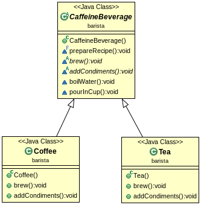

Template Method
Vamos a encapsular pedasos de algortimos en una clase para que sus subclases puedan hacer uso de estas
Receta de café
- Hervimos el agua
- Tiramos café en el aguar hirviendo y la filtamos
- Ponemos la infusion en una taza
- Agregamos azucar y leche
Receta de té
- Hervimos el agua
- Ponemos el saquito de té en el agua hirviendo
- Ponemos la infusion en una taza
- Agregamos limón y azucar
Template Method
Unificamos las recetas
Si bien las recetas no son exactamente iguales podemos encotrar la corelacion de los pasos
- Tiramos cafe en el aguar hirviendo, o lo pasamos por el filtro
- Ponemos el saquito de té en el aguar hirviendo
se puede generalizar como: Agregamos el ingrediente de la infusion en el agua hirviendo
Si bien las recetas no son exactamente iguales podemos encotrar la corelacion de los pasos
- Agregamos azucar y leche
- Agregamos limón y azucar
se puede generalizar como: Agregamos los condimentos
Los pasos para hacer té o café quedarian:
- Hervimos el agua
- Agregamos el ingrediente de la infusion en el agua hirviendo
- Ponemos la infusion en una taza
- Agregamos los condimentos
Template Method
Los pasos para hacer té o café en código:
Como los pasos brew() y addCondiments() son una generalización, vamos a implementarlos en las sublcases Tea y Coffee
Así quedaría el diagrama de clases

Template Method
Implementación
Implementamos la clase padre
El método prepareRecipe() va a ser usado por las 2 subclases Tea y Coffee. Esta declarado final para que las subclases no lo puedan sobreescribirlo, y cambiar los pasos de la receta.
brew() y addCondiments() como los generalizamos los declaramos abstractos y dejamos que las sublclases se encarguen de ellos.
boilWater() y pourInCup() los implementamos aca porque son iguales en infusiones
Template Method
Implementación
Implementamos los métodos que faltan de las clases Coffee y Tea
Template Method
Lo que tenemos implementado es un tempalte method
prepareRecipe() es el template method
- Sirve de plantilla o estructura para un algoritmo
- En el template cada paso del algoritmo esta representado por un método
- Algunos están implementados y otros serán implementados por las subclases
Template Method
Hooked
Un hook es un método declarado en la clase abstracta, pero tiene una implemetación default o vacía. Esto le da a las subclases la capacidad de engancharese "hook into" al algoritmo en varios puntos, si es que la subclase quiere hacerlo, porque la subclase puede también ignorar el hook
El condicional que agregamos en el método template agrega los condimentos a no ser que se sobreescriba el método customerWantsCondiments() en la subclase y que devuelva false en alguna circunstancia.
Template Method
Usamos el hook
Para usar el hook sobreescribirmos el método customerWantsCondiments(). Este controla si va a correr cierta parte del algoritmo, en este caso si se va a ejecutar addCondiments()
Template Method
Usamos el hook
Por último la clase test
Principio de diseño
Principio Hollywood
No nos llame, nosotros lo llamamos
Este principio nos da la manera de prevenir "dependecias podridas", que significa que tenemos componentes de alto nivel dependiendo en componentes de bajo nivel dependiendo en componentes de alto nivel que dependen en otros componentes y asi sucesitamentes.
Con este principio permitimos a los componentes de bajo nivel engancharse en un sistema, pero el componente de alto nivel determina como y cuando se necesitan.
El componente de alto nivel no quiere que lo llamen los de bajo nivel sino que el los llama.
Los componentes de bajo nivel participan en el algoritmo pero el que los llama cuando los necesitas es el componente de alto nivel.
Patron Template Method
Define el esqueleto de un algoritmo en un método definiendo pasos, y permite a las subclases proveer una implementación para alguno de estos pasos pero sin cambiar la estructura del algoritmo.
- Clasificación: Es un patrón de comportamiento
- Motivación: La implementeación de un algoritmo varia de acuerdo al entorno en que opera. Esto hace que se necesiten diferentes variantes del algoritmo.
El template method fija el orden de las operaciones, pero permite a las subclases variar esas operaciones.
- Aplicabilidad:
- Cuando contamos con un algoritmo con varios pasos que no cambian, de modo que dichos pasos invariantes serían implementados en una superclase, dejando la implementación de los pasos que cambian para las subclases.
- Para evitar la replicación de código mediante generalización: se factoriza el comportamiento común de varias subclases en una única superclase.
- Para controlar las extensiones de las subclases. El Método Plantilla utiliza métodos especiales (métodos de enganche o hooks) en ciertos puntos, siendo los únicos puntos que pueden ser redefinidos y, por tanto, los únicos puntos donde es posible la extensión.
El metodo template es muy usando en frameworks, en estos se implementean las partes invariantes de la arquitectura, dejando lugar para las customizaciones
Patron Template Method
- Participantes:
- Clase Abstracta: proporciona la definición de una serie de operaciones primitivas (normalmente abstractas) que implementan los pasos de un algoritmo y que serán definidas en las subclases.
Se encarga también de la implementación de un método desde el cual son invocadas, entre otras, las operaciones primitivas. Dicho método actúa a modo de plantilla, de ahí el nombre de este patŕon, definiendo la secuencia de operaciones de un algoritmo.
- Clase Concreta:implementa las operaciones primitivas definidas en la clase abstracta de la cual hereda, quedando así determinado el comportamiento específico del algoritmo definido en el método plantilla, para cada subclase.
- Consecuencias:
- La utilización de este patrón es fundamental a la hora de reutilizar código.
- Se invierte el control: en este caso la superclase es la encargada de llamar a las operaciones definidas en las subclases.
←
→
/
#